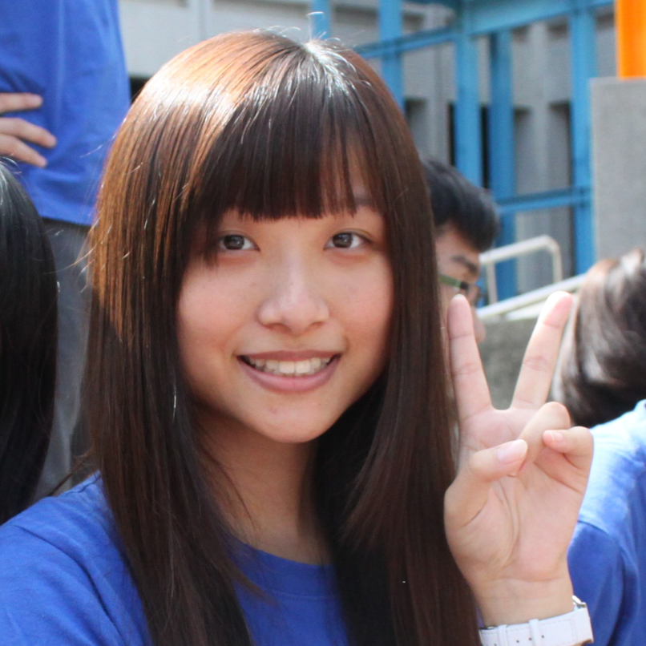

公司職員簡介
姓名 : 許家瑜
職稱 : 2016假日營表演舞
入社年份 : 2015-2016
特殊表現 : 舞后
員工表現

斈恩
發現我跟你完全不是因為原文認識的:) 非常喜歡妳<3人很好聊、親切又美麗大方的姊姊，能因為修課跟妳認識變熟真是太好了KeKe 畢業快樂，希望妳去日本順順利利！
依潔
跟排文欣劇組的時候才認識你的，跟之前假日營那個性感的跳舞姊姊有些出入，是一個很ㄎㄧㄤ的朋友，好喜歡你快活的個性， 可以讓周圍的人也很快樂，畢業快樂！
宥儒
雖然我們是在表演舞認識，但比較多聊天好像都是在上學期數理思維上課時，都在上課聊天，不過真的蠻開心的，希望你之後去日本一切順利，畢業樂!
珊羽
大一遇到的第一個股長，總是認真教會我，還總鼓勵我要放開，雖然最後好像還是沒能做到，然後社大那次你真的很sexy耶，畢業快樂啦。
皓淳
假日營表演舞真是一個超級棒的回憶，但最好玩的還是為了社大練舞的時候，沒有股長的身分，你還是一樣很正但是講話突然就變很好笑， 超反差我超喜歡的<3祝你畢業快了喔~
ㄐㄩ
嗨溜我的表演舞故障家瑜，好懷念那時候一起在風三練舞的時光，一起互嗆打架嘴砲，還有偷跑去吃三層山排擠某些股員（方），雖然表演舞壓力很大但那段時光還是很快樂ㄉ❤️畢業快樂， 雖然這一年你不在學校都沒碰到你，但祝福您以後去日本可以很順利，偶爾可以寄些名產給可愛ㄐㄩ，ㄞㄋ❤️